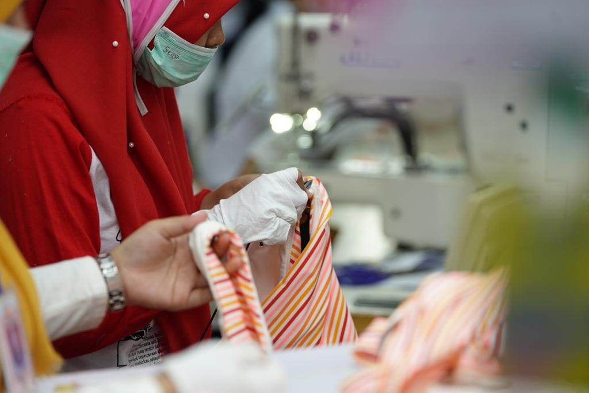
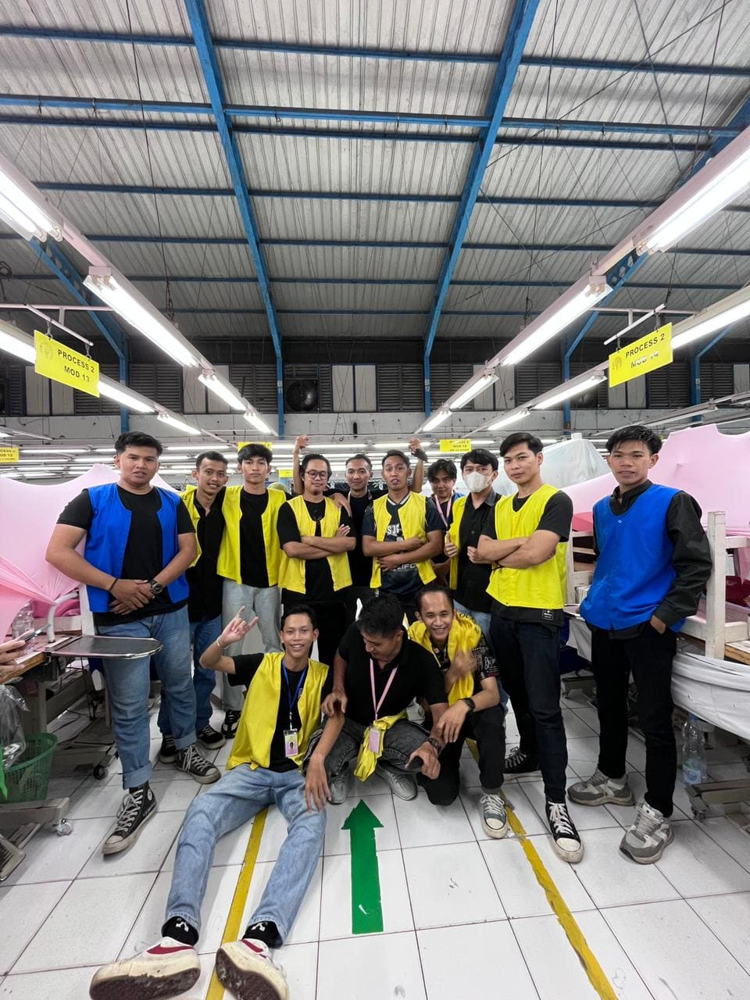
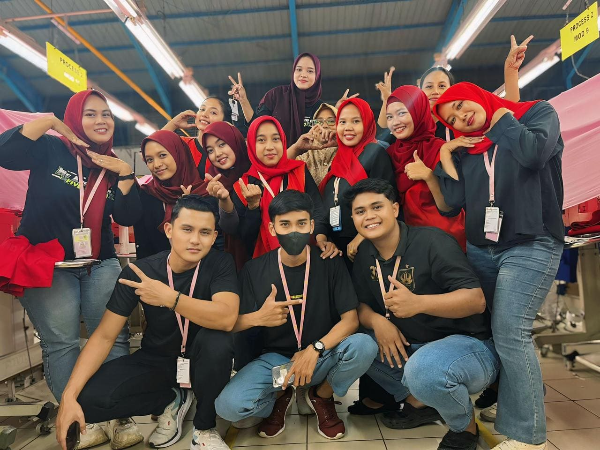
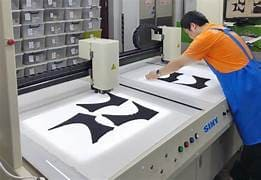

Excellence in Garment Manufacturing With Quality Commitment
PT Hop Lun Indonesia berkomitmen untuk menghasilkan produk garmen berkualitas tinggi melalui proses produksi yang efisien, penggunaan teknologi modern, serta tenaga kerja yang profesional. Setiap tahap produksi dilakukan dengan standar kualitas yang ketat untuk memastikan produk yang dihasilkan memenuhi kebutuhan pelanggan dan pasar internasional.
+
Years Experience
+
Products Produced
+
Skilled Workers

Production Schedule
Today 2:30 PM
Production ManagerQuality Garments, Trusted Manufacturing
Selama lebih dari dua dekade, PT Hoplun Indonesia berkomitmen memproduksi garmen berkualitas tinggi dengan menggabungkan teknologi manufaktur modern dan keahlian tenaga kerja profesional untuk memenuhi standar industri global.
Tim profesional kami bekerja secara kolaboratif di setiap departemen untuk memastikan setiap produk garmen diproduksi dengan presisi, efisiensi, dan kualitas tinggi. Mulai dari proses pemotongan kain, penjahitan, hingga finishing dan pengemasan, kami menjaga standar manufaktur terbaik untuk memenuhi kebutuhan pelanggan global.

Production Support
Always ready to support our clients and production needs.
Departemen Produksi
Proses produksi kami didukung oleh berbagai departemen khusus yang memastikan setiap produk garmen dibuat dengan presisi, efisiensi, dan standar kualitas terbaik.
Fabric Cutting Department
Advanced fabric cutting processes using modern machinery and precise techniques to ensure accurate patterns and efficient material usage for high-quality garment production.

Sewing Department
Advanced sewing production lines operated by skilled workers and supported by modern sewing machines to ensure precision stitching, durability, and consistent garment quality.

Finishing Department
Proses akhir produksi garmen untuk memastikan setiap produk memenuhi standar kualitas melalui pemeriksaan, penyetrikaan, perapihan, dan persiapan sebelum pengemasan dan pengiriman.
- Garment Inspection
- Ironing & Finishing
- Quality Check
Quality Control Department
Proses pemeriksaan kualitas secara menyeluruh untuk memastikan setiap produk garmen memenuhi standar produksi internasional sebelum dikirim ke pelanggan.
- Fabric Inspection
- Stitching Quality Check
- Final Product Inspection
Packing & Distribution Department
Proses pengemasan dan logistik yang efisien untuk memastikan setiap produk garmen dikemas dengan baik, diberi label, dan siap dikirim dengan aman ke pelanggan di seluruh dunia.
- Product Packaging
- Labeling & Sorting
- Global Shipment Preparation
Production Services
Kami menyediakan layanan manufaktur garmen yang didukung oleh teknologi modern, tenaga kerja terampil, serta sistem kontrol kualitas yang ketat untuk menghasilkan produk berkualitas tinggi bagi pelanggan global.

Production Support
Layanan dukungan profesional untuk memastikan proses produksi berjalan lancar serta menghasilkan produk garmen dengan kualitas terbaik.
Quality Assurance
Proses jaminan kualitas yang komprehensif untuk memastikan setiap produk garmen memenuhi standar manufaktur internasional sebelum dikirim.Production Operations
Operasional produksi yang didukung oleh mesin modern dan tenaga kerja terampil untuk memastikan proses manufaktur yang efisien serta kualitas garmen yang konsisten.
Advanced Manufacturing Technology
Mesin produksi modern yang dirancang untuk memastikan presisi, efisiensi, dan kualitas tinggi dalam proses pembuatan garmen.Excellence in Garment Manufacturing, Every Day
PT Hoplun Indonesia merupakan perusahaan manufaktur garmen yang berkomitmen menghasilkan produk berkualitas tinggi melalui teknologi produksi modern, tenaga kerja terampil, serta sistem kontrol kualitas yang ketat untuk memenuhi standar industri global.

Teknologi Canggih
Kami menggunakan teknologi manufaktur modern dan mesin produksi canggih untuk memastikan presisi, efisiensi, serta kualitas yang konsisten pada setiap produk garmen yang kami hasilkan.
Dukungan Produksi yang Andal
Tim kami memastikan proses produksi berjalan lancar dan pengiriman tepat waktu melalui koordinasi yang efisien di seluruh departemen manufaktur.
Tim Profesional
Kami menjamin setiap produk garmen diproses dengan standar tinggi, dari pemotongan kain hingga finishing.
Bantuan Produksi Mendesak?
Tim profesional kami siap kapan saja untuk menyelesaikan masalah produksi dan menjaga kualitas garmen terbaik.